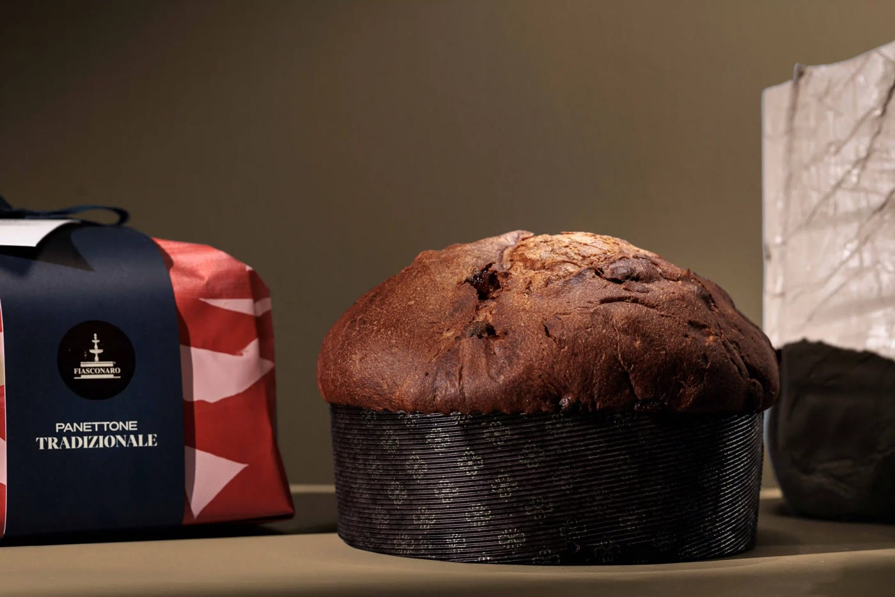
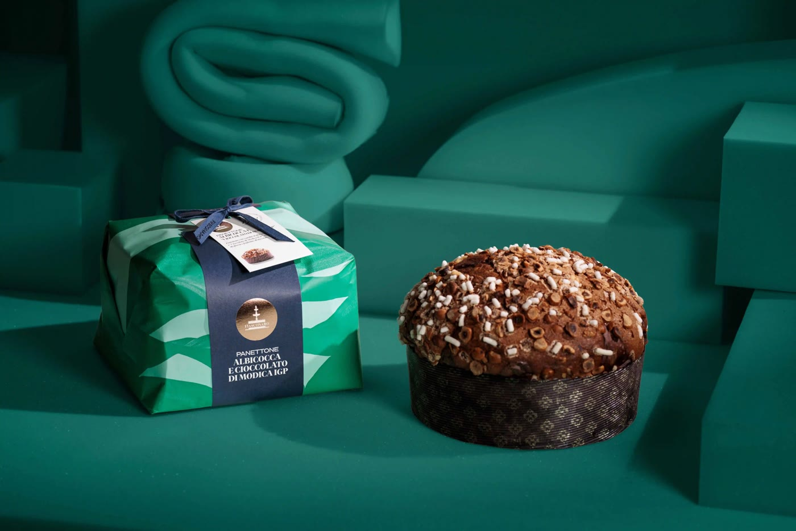
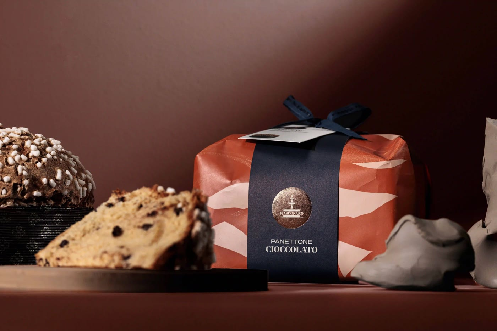
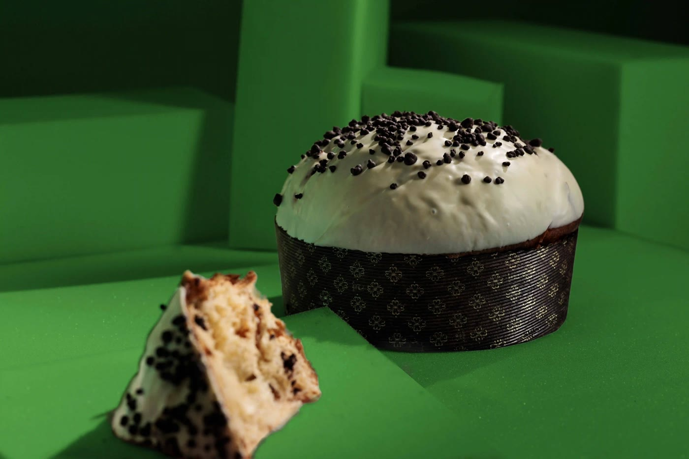
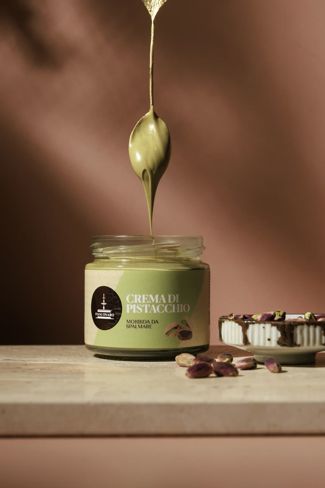
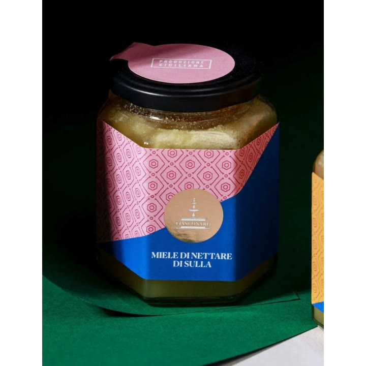

In negozio
I panettoni e le specialità Fiasconaro

Panettone Tradizionale
Il classico Fiasconaro, lievitato naturalmente con pasta madre.

Panettone Oro Verde
Farcito con crema di pistacchio e glassato al cioccolato bianco.

Panettone Albicocca e Cioccolato di Modica IGP
Canditi di albicocca e cioccolato di Modica IGP, con glassa alle nocciole.

Panettone Frutti di Bosco
Farcito con frutti di bosco, glassa bianca e perle di cioccolato.

Panettone Mandorle
Ricoperto di glassa alle mandorle e granella di zucchero.

Panettone Pandorato
Impasto dorato, spolverato di zucchero a velo.

Panettone Cioccolato
Impasto con gocce di cioccolato fondente, per chi ama il cacao.

Panettone Pera e Cioccolato
Impasto con pere e gocce di cioccolato, glassato al cioccolato bianco.

Crema di Pistacchio
Morbida da spalmare — il pistacchio protagonista, anche fuori dal panettone.

Miele di Nettare di Sulla
Miele siciliano dal gusto delicato, ricavato dal nettare dei fiori di sulla.